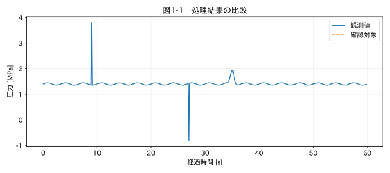

第I部 生データを理解する / 第01章
この章の節
なぜ測定データは汚れるのか
学習目標
測定対象の変動と測定系の不具合を区別して考え、原本を残したまま調査用の表を作れるようになる。読み終えたら、「大きな値だから消す」という処理の何が危険かを、圧力試験を例に説明できることを目標にする。
1.1 圧力のピークを消してよいか
圧縮機の試験で、普段1.4 MPa付近にある圧力が一瞬上昇した。担当者はグラフを見やすくするため、平均との差が大きい値を削除した。ところが、削除した点の一部は通信ノイズではなく、弁の切り替わりで実際に発生した圧力上昇だった。この例は本書で作った仮想事例であり、実在の事故報告ではない。最大圧力を設計評価に使うなら、その処理は評価対象そのものを消している。
教材 02_pressure.csv には、単発の測定不具合と、幅を持つ物理的な圧力パルスを両方入れた。前者は9.0秒と27.0秒、後者は35秒付近にある。生成器が正解を知っていることと、測定データだけから正解を判定できることは別である。読者はまず正解ファイルを見ず、候補と判断根拠を書き分けてほしい。
1.2 値が生まれる経路
測定対象からExcelに数値が届くまでには、センサー、信号調整器、ADC、通信、ロガー、ファイル変換、表計算ソフトが介在する。センサーの温度依存性は緩やかな偏りを作る。ADCの範囲を超えると上限に張り付く。通信が途切れると、空欄になる機器も、前回値を再送する機器もある。CSV変換で時刻の小数部を落とせば、異なる取得時刻が同じ文字列になる。
したがって「値が不自然」という一つの症状から、原因を一つに決めることはできない。まず測定量、単位、基準時刻、センサー位置、レンジ、取得周期、校正日、ファームウェアの版、試験イベントを集める。後からコードを高度にしても、失われた測定条件は自動的には戻らない。
| 段階 | 典型的な不具合 | 確認する証拠 |
|---|---|---|
| 物理量→電気信号 | 接触不良、感度変化 | 結線、校正、別センサー |
| 電気信号→数字 | 飽和、量子化 | レンジ、ADCビット数 |
| 通信→レコード | 欠落、再送、固定値 | シーケンス番号、通信ログ |
| レコード→帳票 | 単位の誤変換、時刻丸め | 変換設定、元ファイル |
1.3 生データ、正規化データ、解析用データ
生データとは、受領したファイルの内容を指す。本書ではこれを変更しない。正規化データは、文字列を数値に変換し、単位や日時の表現を統一したものだ。解析用データは、目的と承認済みルールに基づく補間や補正を適用したものだ。三者を同じ「データ」と呼ぶと、どこで何が変わったのか分からなくなる。
観測値を簡単に表すと、記録値 = 真の測定量に対する応答 + 系統的な偏り + ランダムな変動 となる。ただし、飽和や誤記録はこの加法モデルだけでは表現できない。真の値は通常未知であり、滑らかな線を真値と呼んではいけない。本書の latent_signal は生成器が持つ模擬真値で、実務で得られる列ではない。
1.4 Pythonの表を初めて扱う
Pythonは、ファイルに書いた命令を上から順に実行する。import pandas as pd はpandasを pd という短い名前で使う宣言だ。DataFrameは行と列を持つ表、Seriesは一列のデータと考えると出発しやすい。df['測定値'] で一列を取り出し、raw.gt(2.5) で各行について2.5より大きいかを判定する。結果はTrue/Falseの列であり、値の削除ではない。
candidate は候補を示す変数名である。view = df.assign(candidate=candidate) は列を追加した新しい表を作る。assert df.equals(before) は元の表が変わっていないことを実行時に確かめる。エラーで止まることは、検査が働いた結果でもある。分からないエラーを無視して次のセルへ進むと、以前の計算結果を新しい結果と思い込む危険がある。
関連する詳細実験は実践補講に掲載。入力形式・同期・補間・校正・多変量・チャンク境界を扱う。
実行するコードと結果
run.py · 共通処理の全ソース
教材フォルダで python examples/chapter01/run.py を実行。以下は省略のないスクリプト。共通モジュールは教材一式に含む。
from pathlib import Path
import sys
ROOT=Path(__file__).resolve().parents[2]
sys.path.insert(0,str(ROOT))
sys.path.insert(0,str(ROOT/'examples'))
import numpy as np
import pandas as pd
from common import load,truth,seconds,plot
from tsclean.core import numeric,timestamps,time_flags,hampel,freeze_candidates,interpolate_short,compare
df=load('02_pressure')
before=df.copy(deep=True)
raw=df['測定値']
candidate=raw.gt(2.5)|raw.lt(0)
view=df.assign(candidate=candidate)
assert df.equals(before)
print('原本行数:',len(df),'範囲外候補:',int(candidate.sum()))
print(view.loc[candidate].to_string(index=False))
plot(1,seconds(df),{'観測値':raw,'確認対象':raw.where(candidate)},'圧力 [MPa]')
検証環境での実行結果を開く
原本行数: 600 範囲外候補: 2
時刻 測定値 candidate
2026-01-01 09:00:09+09:00 3.8 True
2026-01-01 09:00:27+09:00 -0.8 True

1.5 図と結果を読む
図1-1では、広い幅を持つ35秒付近の山と、孤立した極端な点を見分けられる。掲載コードの0〜2.5 MPaという範囲は、この演習の確認対象を絞る設定であり、圧縮機一般の正常範囲ではない。2.5 MPaを下回るピークにも、設計上重要な現象が含まれる。
「候補なし」は「正常の証明」ではない。今回の規則が見つけなかったという意味に限定する。判定は、未確認、測定不具合確認、実現象確認、判断不能といった状態で管理し、変更する場合には証拠と担当者を記録する。NISTも外れ値のラベル付けと、誤った観測であることの特定を区別している。R7
演習
基礎演習
コードを実行し、候補の行数、元の行数、35秒付近のピークが残っているかを確認する。
応用演習
上限を1.6 MPaに下げると、候補の意味はどう変わるか。候補数が増えたことを検出性能の改善と呼べるか。
実務演習
別の圧力センサーも同時に上昇し、弁の切替ログがある。一方、片方だけ負圧を記録した。両者に同じ削除規則を適用するか。必要な追加確認を三つ挙げる。
演習解答・解説を表示する
基礎：全600行を残し、範囲外候補は2点になる。35秒付近の実現象は残る。候補を抽出した表だけを元データとして保存しない。
応用：本当に起きた圧力パルスも候補になる。感度は上がり得るが、誤検出も増える。正解ラベルとの比較なしに性能改善とはいえない。
実務：同時上昇には物理現象の証拠がある。負圧も直ちに測定不具合とは断定せず、ゲージ圧か絶対圧か、センサーの測定範囲、配管内の局所現象と時刻同期を確認する。判断不能なら値を保持し、解析結果を採否の両方で比較する。
章末まとめ
クリーニングの出発点は、何を測り、何を評価したいかを明確にすることだ。ファイルを保全し、候補を記録し、原因の判定と値の変更を別の工程にする。この順序が本書全体の基準になる。